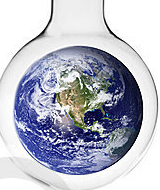

Ekolojik Kriz: EkoBilim, EkoBilsin, EkoBilimiz
| Selam Prenses, |
| Bu yazı Varlık dergisinin Ağustos 2006 sayısında “bilimsel düşüncenin sınırları ve ekolojik kriz” başlığıyla yayınlanmıştı ama son zamanlarda senin yaşlarındaki öğrencilerimle birlikte iklim krizi üzerine konuşup düşünürken belki de bir gözden geçirip yeniden yayınlamak lazım diye düşündüm. Dolayısıyla bir parça didaktik kaçtıysa kusura bakmayarak oku lütfen… |
Geleneksel düşünce ve yaşam biçimleri artık cevaplamıyor varoluşsal sorularımızı. Aydınlanmadan sonra bir (ya da birçok) tanrıya inanmak son derece güç. Tabii bu inanç boşluğunu bilim ve teknoloji dolduruyor. Ailemizle olan sorunlarımızı çözmeyi psikiyatristlere, çevreyle olan sorunlarımızı çözmeyi de mühendislere ve bilim insanlarına bırakıyoruz. En iyisini onlar biliyor, çünkü onlar rakamlara sahipler.
Peki ekolojik krize çözüm ararken nereye dönüp bakacağız? Kendimize bütüncül ya da genelgeçer bir bakış açısı yaratmamız mümkün mü? Yoksa bize sunulanı mı seçmek zorundayız?
Aydınlanma içimize işlemiş…
Nasıl işlemesin ki? Hayatımızı iyileştirdiğine inandığımız her şeyin kökeninde o var. Artık daha genç, daha güzel olmak elimizde, artık doğum yapacağımız güne karar verebiliyor, uzak mesafelere hızla ulaşabiliyor, dünyanın her yerinden her yerine bilgi ve haber gönderebiliyoruz. Bundan yalnız elli sene önce fiziksel olarak mümkün olmayan ne kadar çok şeyi kolaylıkla yapabiliyoruz! Doğayla ve doğanın üzerimizde kurduğu sınırlayıcı güçle olan savaşımızı kazandık gibi görünüyor. Hepsi dünyayı daha iyi anlamamız, neden sonuç ilişkilerini çözümlememiz ve gerçekliği araştırmamız sayesinde! Bu anlayışın kökeninde yatan varsayımlar ise neredeyse sorgulanmadan hayatımızı belirliyor.
Nedir bu varsayımlar? Bugünün bilimsel araştırmalarının kökenindeki varsayım, bizden bağımsız olarak var olan dünyayı objektif bir şekilde araştırabileceğimiz ve böylece içerdiği nedensellikleri anlayabileceğimiz şeklinde özetlenebilir. Bu görüşe göre var olan tek dünya bizim dışımızdadır ve araştırmacının bu dünya üzerinde herhangi bir belirleyici etkisi yoktur.
“Rasyonel bir tavırla yürütülen, hakikati arayan, mantık kullanılarak kanıtlanmaya ya da çürütülmeye çalışılan, retorikten, duygusallıktan, inançlardan uzak duran ve ikna etme endişesi taşımayan” bilimsel projeler, kabul gören ve uygun bulunan projelerdir. Böyle bir bilimsellik anlayışının sosyal bilimlere uygulanması ise şu varsayımı gerektiriyor: Tıpkı doğaya bakıp onu anlayabildiğimiz, bilmecelerini çözebildiğimiz ve insan hayatını “iyileştirebildiğimiz” gibi toplumları da anlayabiliriz. Pazar araştırmaları, kamuoyu araştırmaları, nüfus sayımları, sosyal bilimcilere her bireyi bir sayı olarak algılamalarını ve bu anonim bireylerin davranışları üzerinde matematiksel analizler yaparak neden sonuç ilişkileri kurmalarını sağlayan veritabanlarını oluşturmak ve araştırmak için gerekli alanı ve finansmanı yaratıyor. Tümevarımcı ve ampirik metod böylece hükümet politikalarını, kurumsal dengeleri, tüketilen ürünleri ve tabii doğayla olan ilişkilerimizi belirliyor.
Çevre sorunlarının birer “sorun” olarak algılanması ve bu sorunları çözmek amacıyla yapılan bilimsel çalışmalar da bu bakışın bir parçası. Sorun olarak algıladığımız semptomları modern, endüstriyel yaşantının doğal bir uzantısı olarak görüp bunların kökenindeki sosyo-ekonomik ilişkileri incelemek ve bu ilişkileri değiştirmeye çabalamak yerine şu varsayımı yapıyoruz: Eğer yeterince veri toplar, mantıklı bir çözümleme uygularsak ve yeni teknolojik çözümler üretebilirsek, bu sorunlardan sıyrılıp içinde yaşayıp gittiğimiz hayli teknolojik, hayli endüstriyel, hayli kurumsallaşmış, hayli bireysel yaşantıları sürdürebiliriz. Bu varsayım kısaca ‘sürdürülebilir kalkınma’ olarak adlandırılıyor. Ümit Şahin’in Üç Ekoloji dergisinin 2. Sayısında yayınlanan “Truva Atı Olarak Sürdürülebilir Kalkınma” başlıklı yazısında ifade ettiği gibi:
“Sürdürülebilir kalkınma söyleminin bu kadar başarı ve yaygınlık kazanmasının temel nedeni, bir araya getirdiği birbirine tamamen zıt, daha doğrusu biri (kalkınma) diğerini (sürüdürülebilirlik) ortadan kaldıran iki kavramı uzlaştırma girişimini, sanki bu ikisi birbirini gerçekten destekliyormuş gibi yaparak, bunu da bilimsel bir dil ve yöntem kullanarak yapması olsa gerektir.”
Kalkınmayı doğayı rahatsız etmeden sürdürebilmek bu paradigmanın amacı gibi görünüyor.
Endüstrileşmiş ülkelerdeki hava kirliliği, bebek ölümü oranları, beklenen yaşam süresi gibi istatistiklere baktığımızda (ve aynı ülkelerdeki intihar oranlarına, kişi başına düşen orman ya da doğal alanların miktarı ile ilgili istatistiklere ya da endüstrileşmiş ülkelerin sömürgeleri olmuş ve olmakta olan ülkelere ait herhangi bir istatistiğe bakmadığımızda) gerçekten de doğayla savaşımızı kazandık gibi görünüyor. O halde neden doğa hâlâ direniyor ve boyun eğmiyor? İklim değişikliği, türlerin yok olması ve biyolojik çeşitliliğin azalması, ozon tabakasının incelmesi ve kanser oranlarının artması gibi dev ve birbirine bağlı, çözülmesi neredeyse imkânsız görünen sorunlar niye karşımıza çıkıyor?
Modern Bilim Kendi Sınırlarını Belirler…
Düşünce tarihine baktığımızda bilimsel yöntemleri inceleyen, hatta herhangi tür bir bilgiye ulaşıp ulaşamayacağımızı sorgulayan birçok düşünürle karşılaşırız. 1748’de İnsan Zihni Üzerine Bir Araştırma (An Inquiry Concerning Human Understanding) adlı çalışmasında tümdengelim yöntemini sorgulayan David Hume, gelecekte olanların da geçmişte olanlara benzeyeceği varsayımında bulunmadığımız takdirde bu yöntemin bizi geçerli argümanlara ulaştıramayacağını, bu sebeple ampirik bilginin tek mümkün bilgi olduğunu öne sürmüştü. Deneyimlerimizin bizde bıraktığı izlenimlerin fikirlerimizin tek geçerli kaynağı olabileceği fikrini benimseyen Hume (ve diğer deneyciler) çok daha yakın bir zamanda Karl Popper tarafından eleştirildiler.
Popper’a göre bilimsel teoriler bir bataklığa diktiğimiz kazıklardı (bu benzetmeyi ampirik bilgiyi teorilerini desteklemek için kullanan ve “temel”i değişmez kabul eden yaklaşımlara karşı kullanmıştı). Bilimsel bilgi ancak ve ancak genel bir teoriye ait hipotezlerin her türlü yanlışlamaya açık olması ve sürekli olarak teste tabii tutulması yoluyla mümkün kılınabilirdi. Popper için de bilimin araştırdığı tek bir dünya vardı; sınırları ve yöntemi üzerinde anlaştığımız takdirde, onu rasyonel bir şekilde araştıran bir yöntem bilimsel bilgiyi mümkün kılabilirdi.
Popper’ı eleştiren Thomas Kuhn, paradigmatik değişimlerden bahsederken gelişme ve aydınlanma vizyonunun yanıltıcı olduğunu, bu paradigmanın da diğerleri kadar sınırlayıcı bir paradigma olduğunu ifade eder. Popper’ın tek bir dünya anlayışını eleştirerek birbirinin yerini almak için yarışan birçok dünya anlayışı olduğunu savunan Kuhn, bilimin entelektüel açıdan şiddet içeren (intellectually violent) devrimlerle ilerlediğini ve her paradigmanın kendi kurallarını, kendi kurumlarını, kendi sorularını ve anomalilerini oluşturduğunu söyler.
Bu açıdan bakıldığında doğru bir yöntem yoktur, her paradigmanın kendisine ait ve ilgili topluluk tarafından kabul edilmiş, standart olarak görülen bir yöntemi vardır.
Bu noktadan yola çıkacak olursak, modern bilim kendi sınırlarını da belirler. İklim değişikliği “bilimsel bir gerçeklik” olabilir, ancak bu paradigmanın nerdeyse tüm ürünlerini keyifle kullanan tüketim toplumu için bir gerçeklik olmaktan çok uzaktadır. Çünkü bu paradigma içinde “düşünen” bir birey için mantıksal sonuç, bilim ve teknolojinin nasıl olsa iklim değişikliğinin çözümünü de bulacak olduğudur.
Tarihsel bir sıra izlemeyip rasyonalist (akılcı) geleneğe dönecek olursak, bu yaklaşımın da deneyciliği eleştirdiğini görürüz. Deneyimlerin oluşturduğu izlenimler bilgiyi oluşturmak için doğru kaynak değildir, çünkü izlenimler yanıltıcı olabilir. Bu yüzden izlenimler sorgulanmalı ve aklın süzgecinden geçirilmelidir. Dünya üzerindeki her şey açıklanabilir, yeter ki akılcı bir analize tâbi tutulsun. Dolayısıyla bilgiye ulaşmanın yolu olarak matematiksel mantık ve tümdengelimcilik gereklidir. Rasyonalizme göre tek bir dünya vardır ve bu dünyanın gerçekliğini aktaran bilginin akıldan başka hiçbir kaynağı olamaz.
Rasyonalizmi eleştiren onlarca düşünürden Charles Taylor ‘anlam’a değinir. Taylor, herhangi bir fenomenin anlamının bir özne için ve diğer anlamlar dünyasının içinde var olabileceğine dikkati çeker. Tüm ifadelerimizin ve yorumlarımızın yine yorumlanabileceğini, bu yüzden de hiçbir ifadenin son ve gerçek olduğunu düşünemeyeceğimizi söyler. Rasyonalizm ve deneycilik gibi gelenekleri bu belirsizlikten kendilerini sıyırmaya çalıştıkları için eleştiren Taylor, bu yöntemlerin sosyal bilime uygulanması halinde araştırmacının edindiği bilgiyle değişen bir özne olmaktan çıktığını, toplumsal değişimdeki zaman unsurunun da görmezden gelindiğini ifade eder. Taylor rölativist olmadığını söyler: Gerçeklik kültüre özgü ve kültürle yapılandırılmış bir “uygulama” dır ve her bir uygulamanın araştırılması yoluyla, hayatlarımızı belirlemekte olan kuralların farkına varmamız da mümkündür. Her türlü anlam “tartışmalı”dır, bu yüzden bir yorumlama alanı içerisinde değerlendirilmelidir. Bu kurallar fark edildikçe ortaya çıkan sezgisel boşluklar sosyal bilimin araştırma konusu olmalıdır. Böylece iyileşme ve ilerleme mümkündür. Bu noktada Taylor eleştirel bir aydınlanmacı olarak tanımlanabilir.
Taylor’ın evrensel olmayan bu hermenötik anlayışına tam bir zıtlık içinde yazan Jürgen Habermas pozitivizmi toplumların başarısızlıklarını araştırmadığı için eleştirir. Kişisel tarihine bakıldığında bu son derece anlaşılır bir şeydir: Erken gençliğinde Hitler Gençlik Tugaylarına katılıp holokost sonrasındaki umutsuzluğundan “aydınlanmaya içsel bir rasyonalite” aramakla kurtulabileceğini düşünen Habermas, hocası Theodor Adorno’yla derin fikir ayrılıkları yaşamasına sebep olacak bir araştırmaya girişir: evrensel geçerliliğe sahip ve başarısızlığın ötesine geçecek bir siyaset. Adorno ve Horkheimer’ı insanlığı özgürleştirme amacıyla yola çıkan aydınlanma projesinin, onu bilimin objesi ve deneğine dönüştürerek son raddede başarısız olduğunu yazdıkları için eleştirir. Habermas da rasyonalitenin kültürel ve öğrenilmiş olduğunu kabul eder, ancak bilginin ve araştırmanın araştırmacıyı ve toplumu sürekli olarak değiştirdiği gerçeğinin göz ardı edilemeyeceğini savunur. Tek bir dünya yoktur, araştırmacıyla çalışma alanı arasındaki dünyanın dışında, araştırmacının kendi (ve araştırmasından etkilenen) dünyası ve özneler arasındaki ahlaki farklılıkların barındığı üçüncü bir evren vardır. Bu dünyaların hepsi birbirini etkiler. Farklı dünyaların ve yorumlamaların var olabilmesi için gereken minimum şartlar da korunması gereken haklardır.
Tüm evrenselliği bir yana bırakarak bilimsel alanı yepyeni bir şekilde tanımlayan Michel Foucault ise ne zaman neyin doğru olduğunu ve kimin tarafından söylenenlerin doğru olduğunu belirleyen yapıların zaman içinde değiştiğini ve güç-bilgi-gerçeklik üçgeninde gücün bilgiye, bilginin de gerçeğe izin verdiğini hatırlatır.
Artık Gerçekten de Sayılara İndirgenebiliriz.
“Her anlam belli bir özne içindir.” Peki bunu görmezden gelip objektifliğe soyunan bilim insanları beyaz önlüklerini giyip bize gerçeği, yalnız gerçeği ve tüm gerçeği mi anlatmaktadırlar? Acaba bu yaklaşım, bizim fikirlerimizi onlarınkinden daha az geçerli, bizim düşüncemizi onlarınkinden daha az önemli bir hale getirmiyor mu? Bilim insanlarının bunu yapmakla elde ettikleri gücü farkedecek olursak, bu sorunların cevabı sırasıyla (ve basitçe) “hayır” ve “evet” olacaktır. Bundan belki de daha önemlisi “bilimsel” bilginin bize ulaştığı araçların iktidar ilişkileriyle gayet yakın bir bağının olmasıdır.
Yapılan analizler ne kadar gerçeğe ulaşmak çabasında olsa da, medyanın bu analizleri yansıtmadaki (en iyi ihtimalle) başarısı, (en kötü ihtimalle) objektifliği nedir? Acaba bu durum ve bunu sorgulamıyor oluşumuz, tembelleştiğimizin bir ifadesi değil mi? Son model arabalarımıza binip klimalı ofisimizde bilgisayarlarımızın başında geçen yorucu bir günden sonra tek istediğimiz televizyonun karşısında “rahatlamak”, arkadaşlarımızla yeni evimizin dekorasyonunu ya da çocuklarımızın okullarını tartışmak haline mi geliyor? Bilimin değeri her ne olursa olsun bizim onu algılayışımız ve sorgusuz sualsiz kabul edişimiz de sorunun bir parçası değil mi? Kendi fikrimizi belirlemek zorunda ve sorumluluğunda değil miyiz? Kendi fikrini belirlemek için emek sarfeden bir kişi fikrini ifade etmek, onu yaymak ve tartışmak isteğinden vazgeçebilir mi? Bunun en doğal sonuçlarından birisi modern toplumsal hayatta düşüncelerin, anlamlandırmaların, yorumların ve tartışmaların önemini kaybetmeye başlamasıdır. Daha bundan otuz sene önce düşüncelerimiz ve anlamlandırmalarımız hayatımızı belirler ve yönlendirirken bugün neredeyse tüm seçimlerimizin yaşam tarzı ve bireysel tercihler olarak tanımlanıp “hoşgörülmeleri” ve mümkünse fazla kurcalanmamaları önerilmiyor mu bize? Tutku, modern hayatta siyasi fikirlerle hiçbir ilgisi olmayan, dünya görüşümüzle ilişkilendirilmeyen bir kavram haline geldi.
Artık tutkularımız tükettiğimiz ürünlere ve ulaşabildiğimiz hayat standartlarına yönelmiş durumda. Belki bu durumda gerçekten de sayılara indirgenebiliriz artık.
Soruları ve araştıracak cevapları olmayan bir küresel toplumun çözemediği ve çözemeyeceği küresel çevre sorunları olması kadar doğal ne olabilir? Ekolojik krizin temelinde yatan tüketim çılgınlığı sorgulanmayıp da pazarlama, finans ya da ekonomi gibi “bilimsel disiplinler”ce sayısallaştırıldığı sürece bu sorunlar da değişmeyecektir. Bulgularının sınırlarını tanımakta ve açıklamakta sosyal bilimlere oranla çok daha başarılı olan doğa bilimleri için gelişmenin bir yolu da, üyeleri tek gerçekliği bizlere ulaştıran Mesih rolüne büründüğünde alacakları önlemleri belirlemek için, disiplinlerin kendi iç denetim mekanizmalarını geliştirmeleridir.
Sosyal bilimler içinse yapılması neredeyse mecburi olan paradigma değişikliği, doğa bilimlerin son yüzyıl boyunca ödünç aldıkları metodlarından artık vazgeçerek, araştırma konularından modellerine kadar yaptıkları tüm seçimleri gözden geçirmeleri ve sınırlarını kabul etmeleridir. Yoksa tek yapılabilecek şey, toplumda var olan güç ilişkilerini sorgulamadan tüketicileri gruplamak haline gelecek. Yoksa kalkınmanın kutsallığını ve sürdürülebilmesinin önemini, karbon ticaretinin nasıl daha kârlı bir hale getirilebileceğini, insanın dünyadaki varoluşu imkânsız hale gelene kadar araştırmak zorunda kalacağız. Yoksa gazetlerde endüstrileşmiş ülkeler tarafından üçüncü dünyaya satılan her bir nükleer reaktörün (kanser oranlarını ne kadar artırdığını ya da kaç adet temiz enerji santralinin kurulmasını engellediğini değil ama) kaç eve elektrik götürdüğünü okumaya devam edeceğiz. Yoksa neden endüstriyelleşmiş bir organik ürün sektörünün toplumun geleneksel dokusunu yırtacağı hiç sorgulanmayacak. Yoksa enerji ya da su kaynaklarına sahip olmak için bir devletin başka bir ülkedeki insanları öldürmesini neden protesto etmesi gerektiğini hiç bilmeyecek, dolayısıyla seçimlerinin ve davranışlarının sorumluluğunu fark edemeyecek bir kuşak yetişecek. Yoksa sosyal bilimlerin insanlığa yeni bakış açıları sunarak, kendisini fark etmesini sağlayarak onu geliştirmeye ve toplumsal ilişkilerimizi sorgulamaya yönelik potansiyeli yitip gidecek.
Haziran 2006
Essex Üniversitesi, Colchester, Birleşik Krallık


{kind=link}
yahu ne güzelmiş burası! niye bu kadar geç haberim oldu diye hayıflanmamak elde değil!